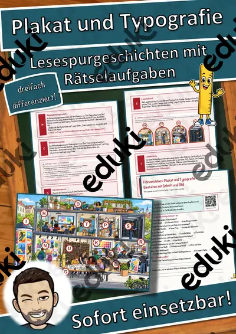
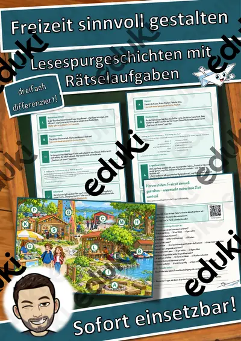

Krippenbau – eine Weihnachtskrippe entwerfen und gestalten – Lesespurgeschichte mit Rätselaufgaben (Klasse 8)
Krippenbau – eine Weihnachtskrippe entwerfen und gestalten – Lesespurgeschichte Kunst (Klasse 8)Schick deine Klasse auf eine Lesespur durch den Werkraum! Emma und Mehmet aus der 8a bauen mit ihrem Kunstlehrer Herrn Wagner eine alpenländische Krippe für den Adventsbasar – Maskottchen ist der kleine goldene Stern Funkel. Von der Vitrine über Skizzentisch, Holzlager, Werkbank, Leimtisch, Tonwerkstatt, Trockenregal, Farbtisch, Lichtecke und Waschbecken bis zum Ausstellungstisch führt der Weg. Am Ende jedes Abschnitts verrät ein Hinweis den nächsten Ort auf dem Plan – nur wer genau liest, findet den Weg und sammelt alle geheimen Buchstaben zum Lösungswort.
Die passende Lesespur für Kunst und Werken in Klasse 8 (auch 7 und 9) – ideal in der Adventszeit, als Einstieg in ein Krippenprojekt, für Stationenlernen oder Vertretungsstunden. Ohne Marken. Geeignet für Mittelschule, Realschule, Gymnasium und Gesamtschule. Das Material ist SOFORT EINSETZBAR und in DREI DIFFERENZIERUNGSSTUFEN (leicht ★ / mittel ★★ / schwer ★★★) angelegt.WICHTIG: Das komplette Material ist sowohl in FARBE als auch in SCHWARZ-WEISS enthalten – ideal zum Sparen von Druckkosten.DAS IST ENTHALTEN
- Lesespurgeschichte in 3 Niveaus (leicht, mittel, schwer)
- farbiger Plan des Werkraums als Suchkarte
- Hörverstehen mit QR-Code zur MP3 (selbstständiges Hören mit Kopfhörern)
- vier Aufträge auf dem Weg: eine Zuordnung von Werkzeugen, eine Rechenaufgabe in der Tonwerkstatt, ein Quiz und ein Steckbrief
- Rätselseite (Wörter-Suchsel + Rätselfragen rund um den Krippenbau)
- Ausmalbild zum Thema
- ausführliches Lösungsblatt für die Lehrkraft mit allen Lösungen (Lesespur, Aufträge, Hörverstehen, Rätselseite)
- alles zusätzlich als komplette Schwarz-Weiß-VarianteSO GEHT DIE LESESPURDie Schülerinnen und Schüler lesen ab START, finden im Text den nächsten Ort, suchen ihn auf dem Plan und lesen bei dieser Station weiter. An jeder richtigen Station gibt es einen Buchstaben. Eingeplante Sackgassen (Fensterbank, Papierkorb, Spind, Tafel) sind keine Stationen und dienen der Selbstkontrolle. Am Ende werden die gesammelten Buchstaben umgestellt und ergeben ein geheimes Lösungswort. (Die Lösungen sind selbstverständlich nur im Lösungsblatt für die Lehrkraft enthalten.)INHALTLICHER SCHWERPUNKTGeschichte der Krippe seit Franz von Assisi, alpenländische und orientalische Krippen, Entwurf in Vorderansicht und Draufsicht, Vordergrund, Mittelgrund und Hintergrund, Naturmaterialien und Holz, sicheres Sägen mit Schutzbrille, Leim und Schraubzwingen, Figuren aus lufttrocknendem Ton, Maßstab und Proportionen, Acrylfarbe und Lasur, sichere LED-Beleuchtung.ABGEDECKTER LEHRPLAN (Klasse 8)
- Kunst – plastisch-räumliches Gestalten mit unterschiedlichen Materialien; Brauchtum und regionale Kunst kennenlernen (LehrplanPLUS Bayern Mittelschule Kunst 8).
- Werken / Technik – sicherer Umgang mit Werkzeugen, Holzverbindungen und Arbeitsplanung.
- Mathematik – Maßstab und Grundrechenarten im Sachzusammenhang.
- Deutsch – Sachtexte sinnentnehmend lesen; einem Hörtext gezielt Informationen entnehmen (Hörverstehen mit MP3).Geeignet für Freiarbeit, Stationenlernen, Vertretungsstunden, Wochenplan und als Einstieg ins Thema.
Ähnliche Materialien

Materialpaket Winter und Advent für die 8. Klasse: 10 Lesespurgeschichten mit Rätselaufgaben fächerübergreifend (Polarlichter, Streusalz, Krippenbau & mehr)

Plakat und Typografie – Gestalten mit Schrift und Bild – Lesespurgeschichte mit Rätselaufgaben (Klasse 8)

Der Werkraum – Lesespurgeschichte mit Rätselaufgaben (Klasse 7)

Masken gestalten – Gesichter verwandeln – Lesespurgeschichte mit Rätselaufgaben (Klasse 5)

Gute Bilder gestalten: Aufbau und Wirkung – Arbeitsheft mit Lösungen (IT 7/8, Realschule Bayern)

Präsentationen gestalten – Folien, die überzeugen – Lesespurgeschichte mit Rätselaufgaben (Klasse 6)

Freizeit sinnvoll gestalten – was macht meine freie Zeit wertvoll? – Lesespurgeschichte mit Rätselaufgaben (Klasse 6)